Note
Click here to download the full example code or run this example in your browser via Binder
Manifold learning on handwritten digits: Locally Linear Embedding, Isomap…¶
An illustration of various embeddings on the digits dataset.
The RandomTreesEmbedding, from the sklearn.ensemble module, is not
technically a manifold embedding method, as it learn a high-dimensional
representation on which we apply a dimensionality reduction method.
However, it is often useful to cast a dataset into a representation in
which the classes are linearly-separable.
t-SNE will be initialized with the embedding that is generated by PCA in this example, which is not the default setting. It ensures global stability of the embedding, i.e., the embedding does not depend on random initialization.
Linear Discriminant Analysis, from the sklearn.discriminant_analysis
module, and Neighborhood Components Analysis, from the sklearn.neighbors
module, are supervised dimensionality reduction method, i.e. they make use of
the provided labels, contrary to other methods.
- 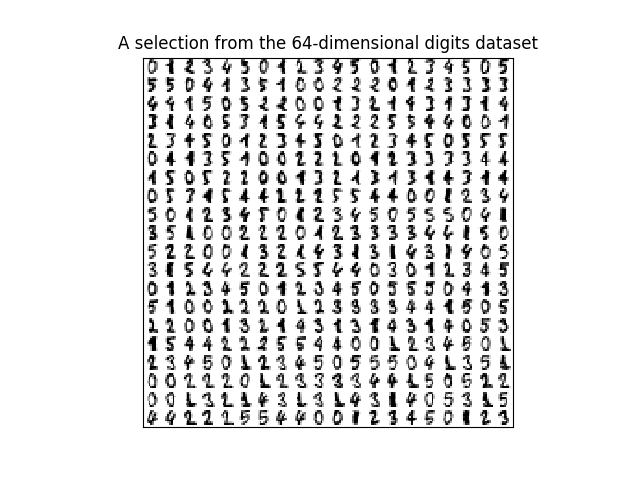
- 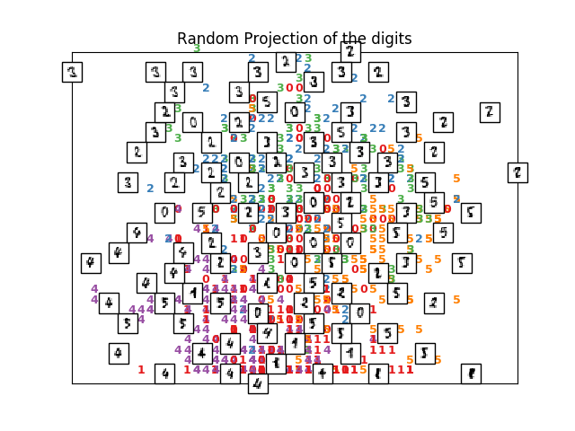
- 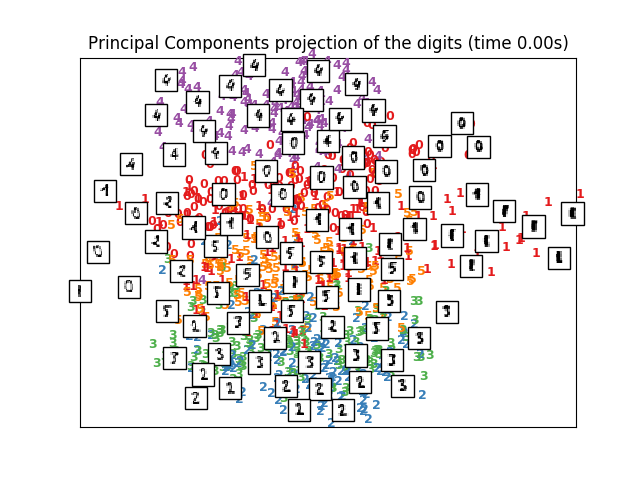
- 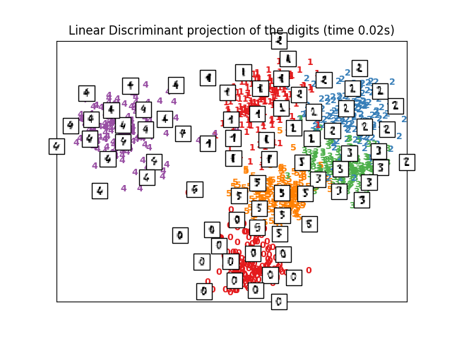
- 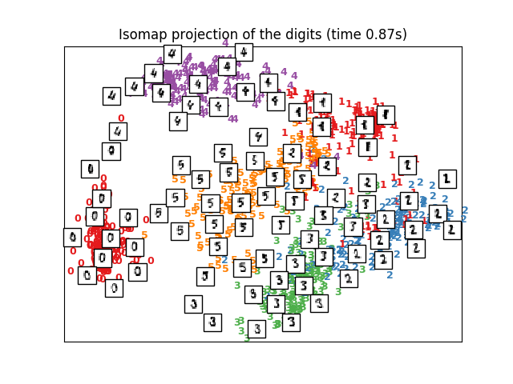
- 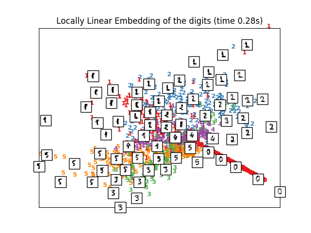
- 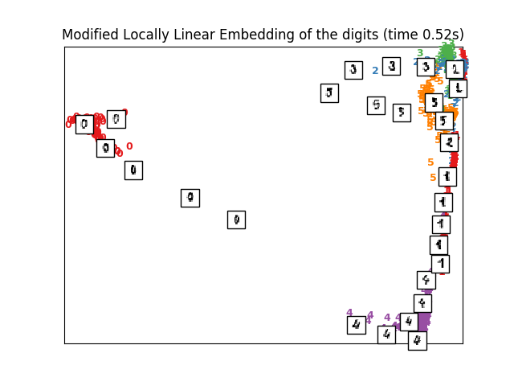
- 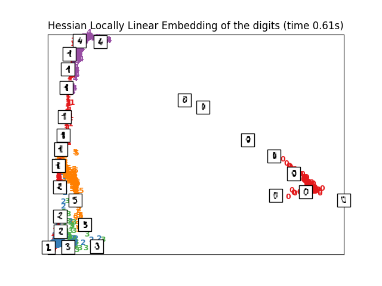
- 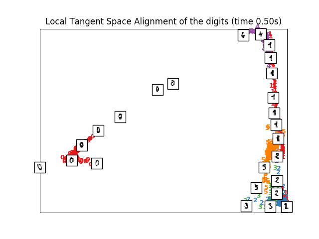
- 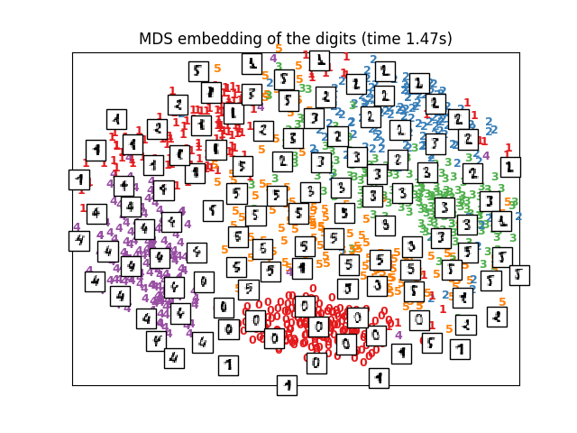
- 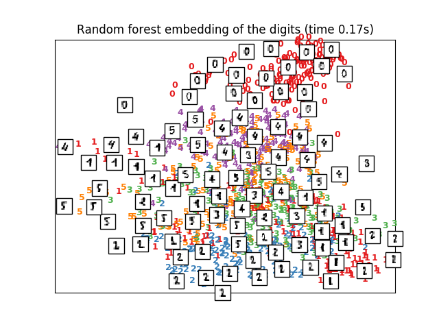
- 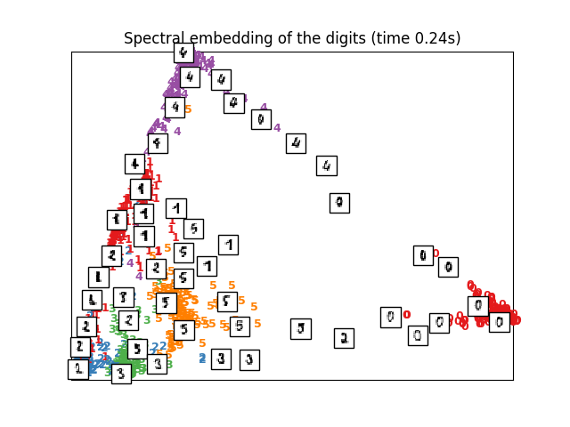
- 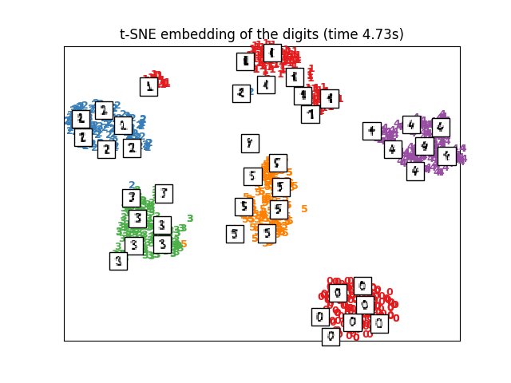
- 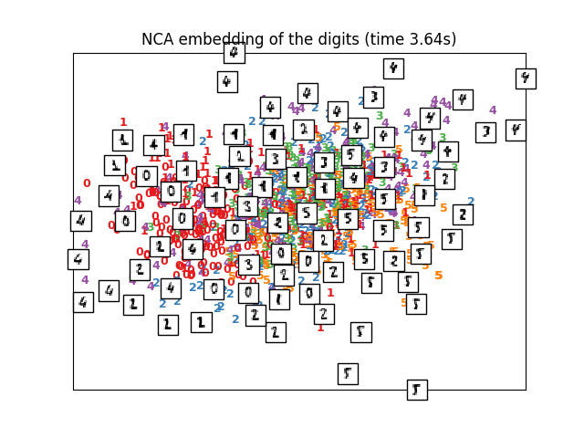
Out:
Computing random projection
Computing PCA projection
Computing Linear Discriminant Analysis projection
Computing Isomap projection
Done.
Computing LLE embedding
Done. Reconstruction error: 1.63544e-06
Computing modified LLE embedding
Done. Reconstruction error: 0.360655
Computing Hessian LLE embedding
Done. Reconstruction error: 0.212802
Computing LTSA embedding
Done. Reconstruction error: 0.212808
Computing MDS embedding
Done. Stress: 148085982.692962
Computing Totally Random Trees embedding
Computing Spectral embedding
Computing t-SNE embedding
Computing NCA projection
# Authors: Fabian Pedregosa <fabian.pedregosa@inria.fr>
# Olivier Grisel <olivier.grisel@ensta.org>
# Mathieu Blondel <mathieu@mblondel.org>
# Gael Varoquaux
# License: BSD 3 clause (C) INRIA 2011
from time import time
import numpy as np
import matplotlib.pyplot as plt
from matplotlib import offsetbox
from sklearn import (manifold, datasets, decomposition, ensemble,
discriminant_analysis, random_projection, neighbors)
print(__doc__)
digits = datasets.load_digits(n_class=6)
X = digits.data
y = digits.target
n_samples, n_features = X.shape
n_neighbors = 30
# ----------------------------------------------------------------------
# Scale and visualize the embedding vectors
def plot_embedding(X, title=None):
x_min, x_max = np.min(X, 0), np.max(X, 0)
X = (X - x_min) / (x_max - x_min)
plt.figure()
ax = plt.subplot(111)
for i in range(X.shape[0]):
plt.text(X[i, 0], X[i, 1], str(y[i]),
color=plt.cm.Set1(y[i] / 10.),
fontdict={'weight': 'bold', 'size': 9})
if hasattr(offsetbox, 'AnnotationBbox'):
# only print thumbnails with matplotlib > 1.0
shown_images = np.array([[1., 1.]]) # just something big
for i in range(X.shape[0]):
dist = np.sum((X[i] - shown_images) ** 2, 1)
if np.min(dist) < 4e-3:
# don't show points that are too close
continue
shown_images = np.r_[shown_images, [X[i]]]
imagebox = offsetbox.AnnotationBbox(
offsetbox.OffsetImage(digits.images[i], cmap=plt.cm.gray_r),
X[i])
ax.add_artist(imagebox)
plt.xticks([]), plt.yticks([])
if title is not None:
plt.title(title)
# ----------------------------------------------------------------------
# Plot images of the digits
n_img_per_row = 20
img = np.zeros((10 * n_img_per_row, 10 * n_img_per_row))
for i in range(n_img_per_row):
ix = 10 * i + 1
for j in range(n_img_per_row):
iy = 10 * j + 1
img[ix:ix + 8, iy:iy + 8] = X[i * n_img_per_row + j].reshape((8, 8))
plt.imshow(img, cmap=plt.cm.binary)
plt.xticks([])
plt.yticks([])
plt.title('A selection from the 64-dimensional digits dataset')
# ----------------------------------------------------------------------
# Random 2D projection using a random unitary matrix
print("Computing random projection")
rp = random_projection.SparseRandomProjection(n_components=2, random_state=42)
X_projected = rp.fit_transform(X)
plot_embedding(X_projected, "Random Projection of the digits")
# ----------------------------------------------------------------------
# Projection on to the first 2 principal components
print("Computing PCA projection")
t0 = time()
X_pca = decomposition.TruncatedSVD(n_components=2).fit_transform(X)
plot_embedding(X_pca,
"Principal Components projection of the digits (time %.2fs)" %
(time() - t0))
# ----------------------------------------------------------------------
# Projection on to the first 2 linear discriminant components
print("Computing Linear Discriminant Analysis projection")
X2 = X.copy()
X2.flat[::X.shape[1] + 1] += 0.01 # Make X invertible
t0 = time()
X_lda = discriminant_analysis.LinearDiscriminantAnalysis(n_components=2
).fit_transform(X2, y)
plot_embedding(X_lda,
"Linear Discriminant projection of the digits (time %.2fs)" %
(time() - t0))
# ----------------------------------------------------------------------
# Isomap projection of the digits dataset
print("Computing Isomap projection")
t0 = time()
X_iso = manifold.Isomap(n_neighbors, n_components=2).fit_transform(X)
print("Done.")
plot_embedding(X_iso,
"Isomap projection of the digits (time %.2fs)" %
(time() - t0))
# ----------------------------------------------------------------------
# Locally linear embedding of the digits dataset
print("Computing LLE embedding")
clf = manifold.LocallyLinearEmbedding(n_neighbors, n_components=2,
method='standard')
t0 = time()
X_lle = clf.fit_transform(X)
print("Done. Reconstruction error: %g" % clf.reconstruction_error_)
plot_embedding(X_lle,
"Locally Linear Embedding of the digits (time %.2fs)" %
(time() - t0))
# ----------------------------------------------------------------------
# Modified Locally linear embedding of the digits dataset
print("Computing modified LLE embedding")
clf = manifold.LocallyLinearEmbedding(n_neighbors, n_components=2,
method='modified')
t0 = time()
X_mlle = clf.fit_transform(X)
print("Done. Reconstruction error: %g" % clf.reconstruction_error_)
plot_embedding(X_mlle,
"Modified Locally Linear Embedding of the digits (time %.2fs)" %
(time() - t0))
# ----------------------------------------------------------------------
# HLLE embedding of the digits dataset
print("Computing Hessian LLE embedding")
clf = manifold.LocallyLinearEmbedding(n_neighbors, n_components=2,
method='hessian')
t0 = time()
X_hlle = clf.fit_transform(X)
print("Done. Reconstruction error: %g" % clf.reconstruction_error_)
plot_embedding(X_hlle,
"Hessian Locally Linear Embedding of the digits (time %.2fs)" %
(time() - t0))
# ----------------------------------------------------------------------
# LTSA embedding of the digits dataset
print("Computing LTSA embedding")
clf = manifold.LocallyLinearEmbedding(n_neighbors, n_components=2,
method='ltsa')
t0 = time()
X_ltsa = clf.fit_transform(X)
print("Done. Reconstruction error: %g" % clf.reconstruction_error_)
plot_embedding(X_ltsa,
"Local Tangent Space Alignment of the digits (time %.2fs)" %
(time() - t0))
# ----------------------------------------------------------------------
# MDS embedding of the digits dataset
print("Computing MDS embedding")
clf = manifold.MDS(n_components=2, n_init=1, max_iter=100)
t0 = time()
X_mds = clf.fit_transform(X)
print("Done. Stress: %f" % clf.stress_)
plot_embedding(X_mds,
"MDS embedding of the digits (time %.2fs)" %
(time() - t0))
# ----------------------------------------------------------------------
# Random Trees embedding of the digits dataset
print("Computing Totally Random Trees embedding")
hasher = ensemble.RandomTreesEmbedding(n_estimators=200, random_state=0,
max_depth=5)
t0 = time()
X_transformed = hasher.fit_transform(X)
pca = decomposition.TruncatedSVD(n_components=2)
X_reduced = pca.fit_transform(X_transformed)
plot_embedding(X_reduced,
"Random forest embedding of the digits (time %.2fs)" %
(time() - t0))
# ----------------------------------------------------------------------
# Spectral embedding of the digits dataset
print("Computing Spectral embedding")
embedder = manifold.SpectralEmbedding(n_components=2, random_state=0,
eigen_solver="arpack")
t0 = time()
X_se = embedder.fit_transform(X)
plot_embedding(X_se,
"Spectral embedding of the digits (time %.2fs)" %
(time() - t0))
# ----------------------------------------------------------------------
# t-SNE embedding of the digits dataset
print("Computing t-SNE embedding")
tsne = manifold.TSNE(n_components=2, init='pca', random_state=0)
t0 = time()
X_tsne = tsne.fit_transform(X)
plot_embedding(X_tsne,
"t-SNE embedding of the digits (time %.2fs)" %
(time() - t0))
# ----------------------------------------------------------------------
# NCA projection of the digits dataset
print("Computing NCA projection")
nca = neighbors.NeighborhoodComponentsAnalysis(init='random',
n_components=2, random_state=0)
t0 = time()
X_nca = nca.fit_transform(X, y)
plot_embedding(X_nca,
"NCA embedding of the digits (time %.2fs)" %
(time() - t0))
plt.show()
Total running time of the script: ( 0 minutes 27.359 seconds)